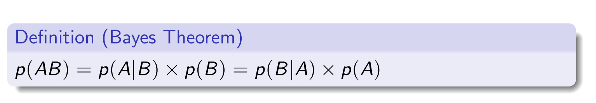

<html><head><style>
/* https://github.com/microsoft/vscode/blob/master/extensions/markdown-language-features/media/markdown.css */
/*---------------------------------------------------------------------------------------------
 *  Copyright (c) Microsoft Corporation. All rights reserved.
 *  Licensed under the MIT License. See License.txt in the project root for license information.
 *--------------------------------------------------------------------------------------------*/

body {
	font-family: var(--vscode-markdown-font-family, -apple-system, BlinkMacSystemFont, "Segoe WPC", "Segoe UI", "Ubuntu", "Droid Sans", sans-serif);
	font-size: var(--vscode-markdown-font-size, 14px);
	padding: 0 26px;
	line-height: var(--vscode-markdown-line-height, 22px);
	word-wrap: break-word;
}

#code-csp-warning {
	position: fixed;
	top: 0;
	right: 0;
	color: white;
	margin: 16px;
	text-align: center;
	font-size: 12px;
	font-family: sans-serif;
	background-color:#444444;
	cursor: pointer;
	padding: 6px;
	box-shadow: 1px 1px 1px rgba(0,0,0,.25);
}

#code-csp-warning:hover {
	text-decoration: none;
	background-color:#007acc;
	box-shadow: 2px 2px 2px rgba(0,0,0,.25);
}

body.scrollBeyondLastLine {
	margin-bottom: calc(100vh - 22px);
}

body.showEditorSelection .code-line {
	position: relative;
}

body.showEditorSelection .code-active-line:before,
body.showEditorSelection .code-line:hover:before {
	content: "";
	display: block;
	position: absolute;
	top: 0;
	left: -12px;
	height: 100%;
}

body.showEditorSelection li.code-active-line:before,
body.showEditorSelection li.code-line:hover:before {
	left: -30px;
}

.vscode-light.showEditorSelection .code-active-line:before {
	border-left: 3px solid rgba(0, 0, 0, 0.15);
}

.vscode-light.showEditorSelection .code-line:hover:before {
	border-left: 3px solid rgba(0, 0, 0, 0.40);
}

.vscode-light.showEditorSelection .code-line .code-line:hover:before {
	border-left: none;
}

.vscode-dark.showEditorSelection .code-active-line:before {
	border-left: 3px solid rgba(255, 255, 255, 0.4);
}

.vscode-dark.showEditorSelection .code-line:hover:before {
	border-left: 3px solid rgba(255, 255, 255, 0.60);
}

.vscode-dark.showEditorSelection .code-line .code-line:hover:before {
	border-left: none;
}

.vscode-high-contrast.showEditorSelection .code-active-line:before {
	border-left: 3px solid rgba(255, 160, 0, 0.7);
}

.vscode-high-contrast.showEditorSelection .code-line:hover:before {
	border-left: 3px solid rgba(255, 160, 0, 1);
}

.vscode-high-contrast.showEditorSelection .code-line .code-line:hover:before {
	border-left: none;
}

img {
	max-width: 100%;
	max-height: 100%;
}

a {
	text-decoration: none;
}

a:hover {
	text-decoration: underline;
}

a:focus,
input:focus,
select:focus,
textarea:focus {
	outline: 1px solid -webkit-focus-ring-color;
	outline-offset: -1px;
}

hr {
	border: 0;
	height: 2px;
	border-bottom: 2px solid;
}

h1 {
	padding-bottom: 0.3em;
	line-height: 1.2;
	border-bottom-width: 1px;
	border-bottom-style: solid;
}

h1, h2, h3 {
	font-weight: normal;
}

table {
	border-collapse: collapse;
}

table > thead > tr > th {
	text-align: left;
	border-bottom: 1px solid;
}

table > thead > tr > th,
table > thead > tr > td,
table > tbody > tr > th,
table > tbody > tr > td {
	padding: 5px 10px;
}

table > tbody > tr + tr > td {
	border-top: 1px solid;
}

blockquote {
	margin: 0 7px 0 5px;
	padding: 0 16px 0 10px;
	border-left-width: 5px;
	border-left-style: solid;
}

code {
	font-family: Menlo, Monaco, Consolas, "Droid Sans Mono", "Courier New", monospace, "Droid Sans Fallback";
	font-size: 1em;
	line-height: 1.357em;
}

body.wordWrap pre {
	white-space: pre-wrap;
}

pre:not(.hljs),
pre.hljs code > div {
	padding: 16px;
	border-radius: 3px;
	overflow: auto;
}

pre code {
	color: var(--vscode-editor-foreground);
	tab-size: 4;
}

/** Theming */

.vscode-light pre {
	background-color: rgba(220, 220, 220, 0.4);
}

.vscode-dark pre {
	background-color: rgba(10, 10, 10, 0.4);
}

.vscode-high-contrast pre {
	background-color: rgb(0, 0, 0);
}

.vscode-high-contrast h1 {
	border-color: rgb(0, 0, 0);
}

.vscode-light table > thead > tr > th {
	border-color: rgba(0, 0, 0, 0.69);
}

.vscode-dark table > thead > tr > th {
	border-color: rgba(255, 255, 255, 0.69);
}

.vscode-light h1,
.vscode-light hr,
.vscode-light table > tbody > tr + tr > td {
	border-color: rgba(0, 0, 0, 0.18);
}

.vscode-dark h1,
.vscode-dark hr,
.vscode-dark table > tbody > tr + tr > td {
	border-color: rgba(255, 255, 255, 0.18);
}

</style><style>
/* Tomorrow Theme */
/* http://jmblog.github.com/color-themes-for-google-code-highlightjs */
/* Original theme - https://github.com/chriskempson/tomorrow-theme */

/* Tomorrow Comment */
.hljs-comment,
.hljs-quote {
	color: #8e908c;
}

/* Tomorrow Red */
.hljs-variable,
.hljs-template-variable,
.hljs-tag,
.hljs-name,
.hljs-selector-id,
.hljs-selector-class,
.hljs-regexp,
.hljs-deletion {
	color: #c82829;
}

/* Tomorrow Orange */
.hljs-number,
.hljs-built_in,
.hljs-builtin-name,
.hljs-literal,
.hljs-type,
.hljs-params,
.hljs-meta,
.hljs-link {
	color: #f5871f;
}

/* Tomorrow Yellow */
.hljs-attribute {
	color: #eab700;
}

/* Tomorrow Green */
.hljs-string,
.hljs-symbol,
.hljs-bullet,
.hljs-addition {
	color: #718c00;
}

/* Tomorrow Blue */
.hljs-title,
.hljs-section {
	color: #4271ae;
}

/* Tomorrow Purple */
.hljs-keyword,
.hljs-selector-tag {
	color: #8959a8;
}

.hljs {
	display: block;
	overflow-x: auto;
	color: #4d4d4c;
	padding: 0.5em;
}

.hljs-emphasis {
	font-style: italic;
}

.hljs-strong {
	font-weight: bold;
}
</style><style>
/*
 * Markdown PDF CSS
 */

 body {
	font-family: -apple-system, BlinkMacSystemFont, "Segoe WPC", "Segoe UI", "Ubuntu", "Droid Sans", sans-serif, "Meiryo";
	padding: 0 12px;
}

pre {
	background-color: #f8f8f8;
	border: 1px solid #cccccc;
	border-radius: 3px;
	overflow-x: auto;
	white-space: pre-wrap;
	overflow-wrap: break-word;
}

pre:not(.hljs) {
	padding: 23px;
	line-height: 19px;
}

blockquote {
	background: rgba(127, 127, 127, 0.1);
	border-color: rgba(0, 122, 204, 0.5);
}

.emoji {
	height: 1.4em;
}

code {
	font-size: 14px;
	line-height: 19px;
}

/* for inline code */
:not(pre):not(.hljs) > code {
	color: #C9AE75; /* Change the old color so it seems less like an error */
	font-size: inherit;
}

/* Page Break : use <div class="page"/> to insert page break
-------------------------------------------------------- */
.page {
	page-break-after: always;
}

</style><style>
    body {
        font-family: sans-serif;
        font-size: 6px;
        line-height: 1;
        margin: 0px;
        padding: 0px;
        column-count: 5;
        column-gap: 0px;
    }
    h1, h2, h3 {
        font-size: 4px;
        margin-bottom: 2px;
    }
    p {
        margin: 3px 0;
    }
    img {
        max-width: 90%;
        height: auto;
    }
    ul, ol {
        margin: 5px 0;
        padding: 0 15px;
    }
    table {
        width: 100%;
        border-collapse: collapse;
        font-size: 9px;
    }
    table th, table td {
        padding: 2px 5px;
        border: 1px solid #ccc;
    }
    .page {
        page-break-after: avoid;
    }
</style><script src="https://unpkg.com/mermaid/dist/mermaid.min.js"></script><script>
    mermaid.initialize({
      startOnLoad: true,
      theme: document.body.classList.contains('vscode-dark') || document.body.classList.contains('vscode-high-contrast')
          ? 'dark'
          : 'default'
    });
  </script>
<style>
@media print {
    /* Ensure all content is visible and fits within the printable area */
    html, body {
        width: 100%;
        margin: 0;
        padding: 0;
        font-size: 10px;
    }

    /* Add page breaks where necessary */
    .page {
        page-break-after: always;
    }

    img {
        max-width: 100%;
        height: auto;
    }

    table {
        page-break-inside: auto;
        border-collapse: collapse;
    }

    tr {
        page-break-inside: avoid;
        page-break-after: auto;
    }

    td, th {
        word-wrap: break-word;
    }
}
</style>
</head></html><h1 id="total">Total</h1>
<h2 id="markov-definition">Markov Definition</h2>
<p></p>
<h3 id="markov-property">Markov Property</h3>
<p></p>
<p></p>
<p></p>
<h3 id="why-discounting-is-a-good-idea">Why Discounting is a good idea</h3>
<p></p>
<p></p>
<h3 id="bellman-equation">Bellman Equation</h3>
<p></p>
<h3 id="direct-solution-of-bellman-equation">Direct solution of Bellman Equation</h3>
<p></p>
<p></p>
<h3 id="solve-bellman-equation-directly">Solve bellman equation directly</h3>
<p></p>
<h3 id="iterative-policy-evaluation">Iterative policy evaluation</h3>
<p></p>
<p></p>
<p>Optimal Policy and optimal value and Q function</p>
<p></p>
<p></p>
<h3 id="three-assumption-for-boe">Three Assumption for BOE</h3>
<p></p>
<h3 id="convergence-rule">Convergence Rule</h3>
<p></p>
<h2 id="dynamic-programming">Dynamic Programming</h2>
<h3 id="two-assumption-of-dp">Two assumption of DP</h3>
<ol>
<li>MDP to be finite</li>
<li>A perfect model for environment, means we know the trasition and reward function</li>
</ol>
<p></p>
<p>For every states ⇒</p>
<p></p>
<p>In short, update value function using policy untill value function converge, then be greedy to update the policy, then go back to step 2 untill the policy converge.</p>
<p></p>
<p></p>
<p>If value of all states are updated same time or individually</p>
<p></p>
<p></p>
<h3 id="why-value-iteration-is-guranteed-to-converge">Why value iteration is guranteed to converge</h3>
<p></p>
<p></p>
<h2 id="monte-carlo">Monte Carlo</h2>
<p></p>
<p></p>
<h3 id="first-visit-mc-vs-evert-visit-mc">First Visit MC vs Evert Visit MC</h3>
<h3 id="batch-vs-online-monte-carlo">Batch VS Online Monte-Carlo</h3>
<p></p>
<h3 id="no-need-to-store-samples-traces">No Need to store samples traces</h3>
<p></p>
<h2 id="temporal-difference-learning">Temporal Difference Learning</h2>
<p></p>
<h3 id="mc-update-the-value-using-the-actual-return-r-where-dp-use-the-estimated-return-to-update-the-value">MC update the value using the actual return R, where dp use the estimated return to update the value</h3>
<p></p>
<p></p>
<p></p>
<p></p>
<p></p>
<h3 id="what-is-markov-property">What is Markov Property</h3>
<p></p>
<p></p>
<h2 id="mc-control">MC Control</h2>
<h3 id="why-use-model-free-control">Why use model free control</h3>
<p></p>
<h3 id="on-policy-vs-off-policy">On-policy vs off-policy</h3>
<p></p>
<p></p>
<h3 id="means-we-have-a-policy-that-gives-a-non-zero-probablity-to-all-possible-actions">Means we have a policy that gives a non-zero probablity to all possible actions</h3>
<p></p>
<h3 id="epsilon-greedy">Epsilon Greedy</h3>
<p></p>
<p></p>
<p></p>
<p></p>
<p></p>
<p></p>
<h2 id="td-control">TD Control</h2>
<h3 id="difference-between-online-and-offline-learning">Difference between online and offline learning</h3>
<p></p>
<p></p>
<p></p>
<p></p>
<p></p>
<p></p>
<h3 id="target-policy-and-behaviour-policy">Target policy and behaviour policy</h3>
<p>For on policy method, same policy is used to generate episode and to optimise. However, for off-policy method, the target policy are the one use to optimise and behaviour policy are the one used to generate episode.</p>
<p></p>
<p></p>
<p></p>
<h2 id="function-approximation">Function Approximation</h2>
<p></p>
<p></p>
<p></p>
<p></p>
<p></p>
<h3 id="the-estimates-make-the-estimates-closer-to-the-real-v-q-value-but-not-reach-the-real-v-q-value-in-the-end-it-will-get-close-enough-to-the-true-v-q-value-">The estimates make the estimates closer to the real V/Q value, but not reach the real V/Q value, in the end, it will get close enough to the true V/Q value.</h3>
<p></p>
<h2 id="dqn">DQN</h2>
<p></p>
<p></p>
<p></p>
<p></p>
<p></p>
<p></p>
<p></p>
<p></p>
<p></p>
<p></p>
<h3 id="clipping-rewards-varation-in-rewards-maeks-the-training-unstable-clip-positive-reward-to-1-and-negative-reward-to-1">Clipping Rewards: Varation in rewards maeks the training unstable ⇒ Clip positive reward to 1, and negative reward to -1</h3>
<p></p>
<h3 id="skipping-frame-to-reducing-computational-cost-and-accelerating-training-times-">Skipping Frame to reducing computational cost and accelerating training times.</h3>
<p></p>
<h3 id="dobule-q-network">Dobule Q network</h3>
<p>Normal netowork will produce a maximisation bias</p>
<p></p>
<p>Use the main netowrk instead of the target network to do action selection (compared with normal target network)</p>
<p></p>
<p></p>
<p></p>
<h3 id="double-q-network-provide-prediction-that-are-closer-to-the-final-value-and-more-stable-and-less-biased-">Double Q network provide prediction that are closer to the final value and more stable and less biased.</h3>
<p></p>
<h2 id="policy-gradient">Policy Gradient</h2>
<h3 id="why-using-policy-based-method-">Why using policy based method:</h3>
<p>For some environment that has large action space (especially continous action space), iterate through all actions might take a long time, thus have a policy that direct output action would be more efficient.</p>
<p></p>
<h3 id="objective">Objective</h3>
<p></p>
<h3 id="finit-difference-are-simple-inefficient-especially-when-have-tons-of-parameters-and-sometime-efficient-it-can-even-work-for-non-differentiable-ones-">Finit difference are simple, inefficient(especially when have tons of parameters), and sometime efficient (it can even work for non-differentiable ones)</h3>
<p></p>
<h3 id="directly-calculating-the-policy-gradient">Directly calculating the policy gradient</h3>
<p></p>
<h2 id="reinforce-algorithms">REINFORCE algorithms</h2>
<p></p>
<p></p>
<p></p>
<h3 id="reinforce-algorithms-suffer-greatly-from-variance-a-single-erratic-trajectory-can-cause-a-suboptimal-shift-into-wired-area-of-optimisation-">REINFORCE algorithms suffer greatly from variance, a single erratic trajectory can cause a suboptimal shift into wired area of optimisation.</h3>
<p></p>
<p></p>
<p></p>
<h3 id="the-action-in-future-cannot-affect-the-actions-in-the-past-">The action in future cannot affect the actions in the past.</h3>
<p></p>
<h2 id="actor-critics">Actor Critics</h2>
<h3 id="policy-based-method-has-low-bias-but-larger-variance">Policy based method has low bias but larger variance</h3>
<p></p>
<p></p>
<h3 id="td-error">TD Error</h3>
<ul>
<li>Generate the trace</li>
<li>Update the policy value</li>
<li>calcualte the TD error</li>
<li>update the Q value error</li>
</ul>
<p></p>
<p></p>
<p></p>
<h3 id="a3c-is-the-parallel-and-asynchronous-version-of-a2c-the-there-is-a-global-network-which-takes-the-gradient-of-each-agent-and-the-agent-will-sometimes-update-their-states-according-to-global-network-">A3C is the parallel and asynchronous version of A2C, the there is a global network which takes the gradient of each agent, and the agent will sometimes update their states according to global network.</h3>
<p></p>
<p></p>
<p></p>
<p></p>
<p></p>
<p></p>
<p></p>
<p></p>
<p></p>
<p></p>
<p></p>
<p></p>
<p></p>
<p></p>
<p></p>
<p></p>
<p></p>
<p></p>
<p></p>
